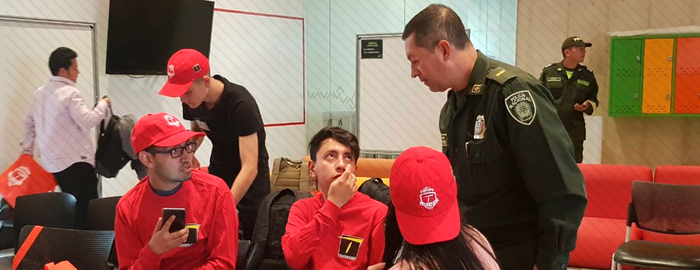
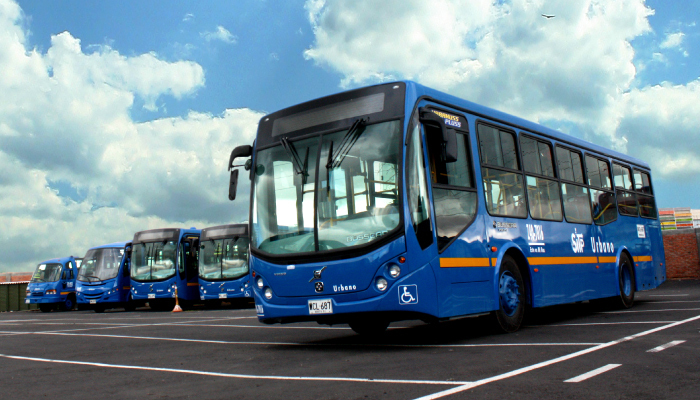

TransMilenio refuerza su equipo para atención de conflictos e información a usuarios
El Equipo T de atención en vía está creado para brindar una mejor experiencia de viaje para los usuarios desde
tres frentes de acción: Pedagogía, Mediación y Anfitriones...Ver más
Empieza Hack36Móvil, iniciativa para jóvenes que quieren aportar con la seguridad y convivencia en TransMilenio

En el marco del evento “Hack36Móvil” que inicio el 15 de marzo de 2019, en el Centro ÁTICO, se reunieron estudiantes
de diferentes universidades...Ver más
Hackathon por la seguridad y la cultura ciudadana en el sistema de transporte público de Bogotá

Bogotá, marzo 14 de 2019. Los días 15 y 16 de marzo, la Policía Nacional de Colombia y el Centro Ático de la
Pontificia Universidad Javeriana, en alianza...Ver más
TRANSMILENIO S.A. lamenta los hechos ocurridos en la estación Pepe Sierra

Bogotá, 13 de marzo de 2019, TRANSMILENIO S.A. lamenta los hechos ocurridos hoy sobre el medio día tras el
choque entre dos vehículos del Sistema...Ver más
¡Atención usuarios! Nuevo servicio urbano del SITP, N15

El 11 de marzo de 2019 entra en funcionamiento la ruta urbana N15, teniendo recorridos en el sector de compartir
y Quintas del Sur, los usuarios de la zona...Ver más
Rutas 19-1, 742, 18-2 presentan novedad en su operación
Buses del SITP próximos al funcionamiento
Seguimos trabajando para mejorar los trayectos de rutas del SITP, para el 11 de marzo el recorrido...
Ver más